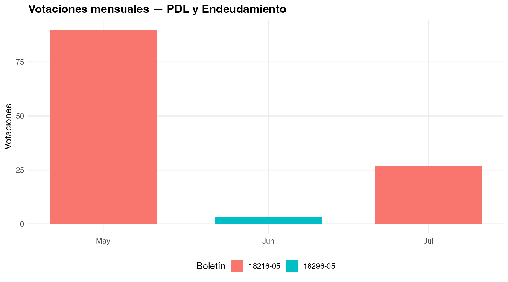
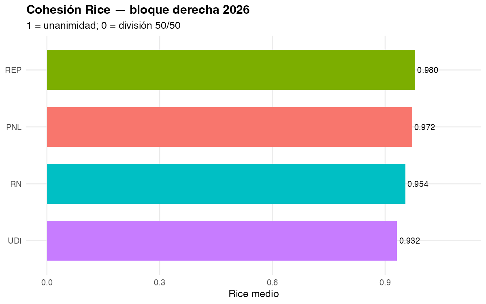
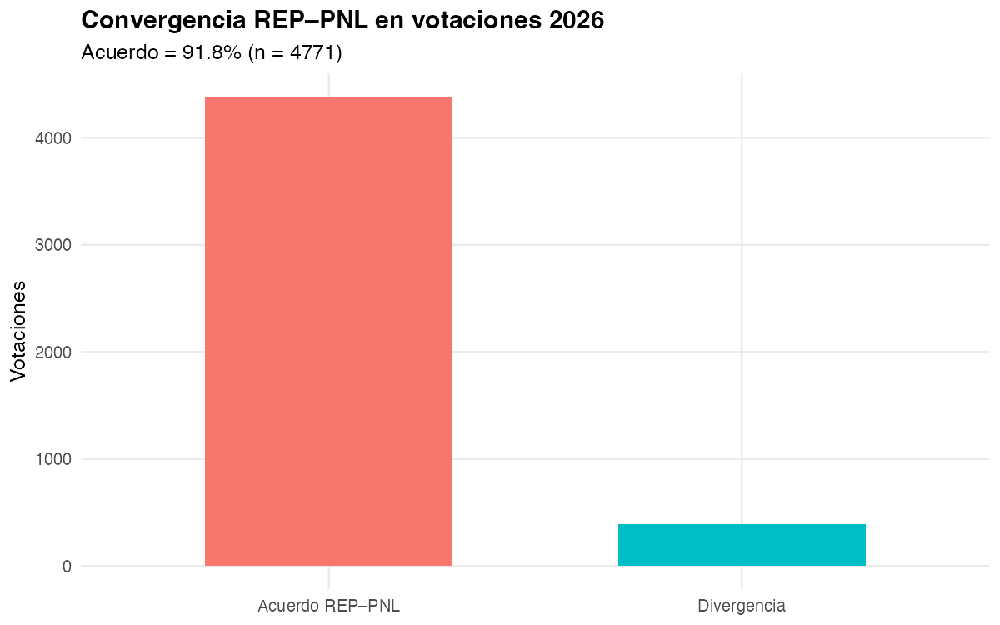
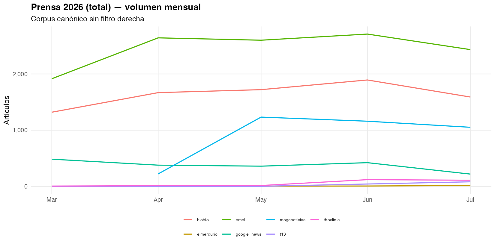
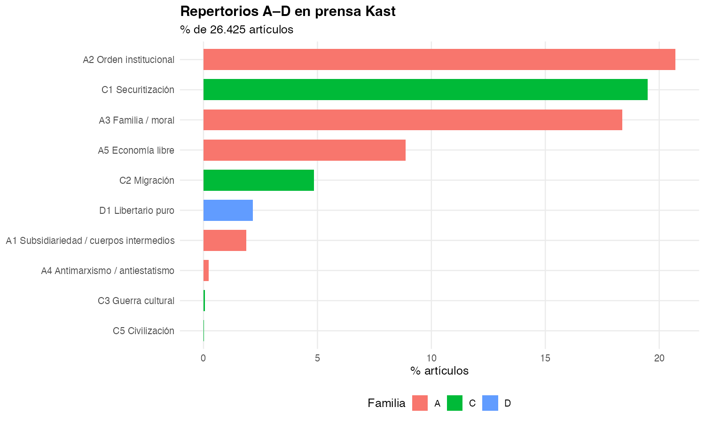
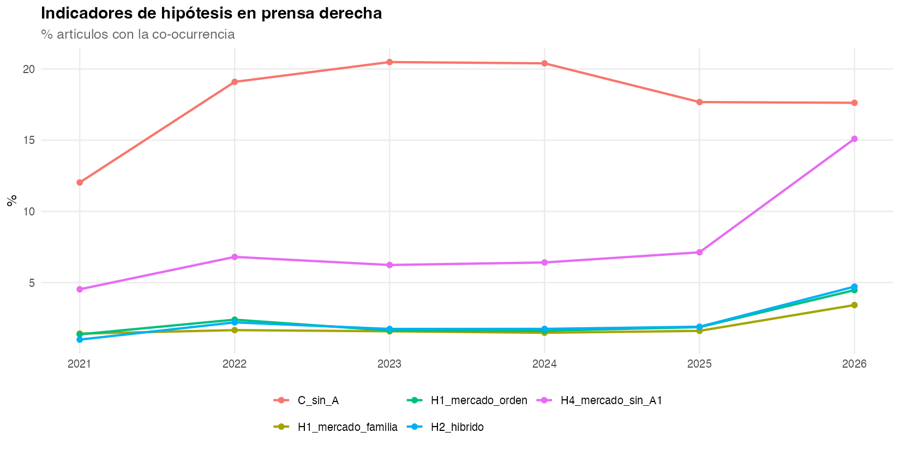
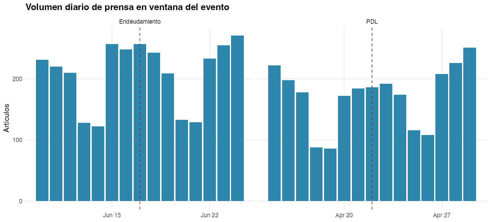

| dominio | n |
|---|---|
| Prensa (canon) | 35117 |
| Discursos Presidencia | 248 |
| Votaciones Cámara | 5837 |
| Votos individuales | 779622 |
| Proyectos / boletines | 612 |
| Mensajes Ejecutivo (-05) | 42 |
Neogremialismo en el gobierno Kast
Hipótesis · proyectos de ley · votos y fisuras · prensa
Fondecyt · neo_gremialismo
2026-08-17
Pregunta
Qué se está contrastando
El neogremialismo no es solo “votar a la derecha”. Es si el gobierno Kast articula mercado + orden/valores (H1), absorbe o no repertorios radicales (H2), se distingue del PNL en el hemiciclo (H3) y omite cuerpos intermedios en la agenda formal (H4).
Tres pistas empíricas, siempre leídas contra las hipótesis:
| Pista | Pregunta | Fuente |
|---|---|---|
| Proyectos | ¿Qué manda el Ejecutivo (-05)? |
Cámara + BCN |
| Votos / fisuras | ¿El bloque vota unido? ¿Dónde se rompe? | votaciones / votos |
| Prensa | ¿Qué repertorios circulan alrededor de esa agenda? | corpus Kast + diccionario A–D |
Cuatro hipótesis
| Hipótesis | Se sostiene si… | Se refuta si… | |
|---|---|---|---|
| H1 | Racionalidad normativa: mercado con orden/familia | Co-ocurren A5 + A2/A3 | El discurso es solo técnico (LyD) o solo libertario (PNL) |
| H2 | Radicalización: núcleo gremialista + C (seguridad, migración, cultura) | C aparece junto a A, no en su lugar | C reemplaza a A, o solo vive en redes |
| H3 | REP ≠ PNL en votos | Divergencia por materia (Rice, acuerdo) | Votan siempre igual |
| H4 | Selección liberal-individual | Agenda -05 sin A1 (cuerpos intermedios) |
Hay iniciativas comunitaristas sistemáticas |
Diccionario (regla: co-ocurrencia)
El indicador no es una palabra suelta. Es qué se junta en la misma unidad.
| Familia | Códigos | Tema |
|---|---|---|
| A gremialista | A1 subsidiariedad · A2 orden · A3 familia · A4 antiestatismo · A5 mercado | Núcleo clásico |
| C radical | C1 seguridad · C2 migración · C3 cultura · C4 anti-élite · C5 civilización | Derecha contemporánea |
| D libertario | D1 Estado mínimo / PNL | Contraste H3 |
Guía: A5+A3 / A5+A2 → H1 · A5+C → H2 híbrido · C sin A → radical puro · A5 sin A1 → H4.
Datos (corte)
Corpus canónico (data/processed/canon/). Votaciones hasta 2026-07-22. Gobierno Kast desde 2026-03-11.
Bloque analizado: REP 28 · UDI 13 · RN 11 · PNL 8 diputados.
Proyectos de ley
Agenda formal: mensajes -05
Los boletines -05 son mensajes del Presidente: la agenda que el gobierno elige presentar. Hay 42 en el canon; casi todos son macro-fiscal / reconstrucción / reajuste, no “cuerpos intermedios”.
H4 en una frase: A1 (subsidiariedad / gremios / juntas de vecinos) aparece en 0 % de esos 42 mensajes.
Watchlist: dónde se vota

Mensajes del Ejecutivo y número de votaciones en Cámara
Casos ancla 2026
Identificar proyectos = identificar dónde se juega cada hipótesis.
| Boletín | Proyecto | Votaciones | Ventana | Hipótesis |
|---|---|---|---|---|
| 18216-05 | Reconstrucción nacional y desarrollo económico y social (PDL) | 117 (may–jul 2026) | ±7d: 2 589 notas | H1/H4 (mercado-Estado) · H2 (eco C en prensa) |
| 18296-05 | Autoriza mayor endeudamiento 2026 | 3 (17-jun) | ±7d: 3 146 notas | H1 (orden fiscal) · fisura de sala |
| 18036-05 | Reajuste remuneraciones sector público | 74 (ene 2026) | pre-Kast | Agenda salarial, no A1 |
| 18137-05 | Contención precio kerosene (emergencia energética) | 9 (24–25 mar) | primer mes Kast | Intervención de precios |
| 17933-05 | Beneficios personas mayores / reavalúo | 5 (ene 2026) | pre-Kast | Tributario municipal |
18216-05 — PDL (el proyecto más votado del gobierno)
117 votaciones en Cámara; cohesión del bloque casi plena (Rice REP 0.999 · PNL 0.988 · UDI 0.993 · RN 0.979).
Lectura H3: no hay fisura doctrinaria REP–PNL en el PDL. Si hay diferencia, no está en el voto general de este mensaje.
Lectura H4: es un mensaje de reconstrucción / desarrollo, no de cuerpos intermedios.

Timeline de prioritarios
18296-05 — Endeudamiento: la fisura está en la sala, no en el bloque
Tres votaciones el 17-jun-2026:
| ID | Resultado | Sí | No |
|---|---|---|---|
| 89178 | Aprobado | 94 | 52 |
| 89179 | Empate 73–73 | 73 | 73 |
| 89180 | Rechazado 72–74 | 72 | 74 |
El bloque derecha entra cohesionado; el proyecto se estrella en el hemiciclo. Hipótesis: la fisura relevante aquí es gobierno vs. oposición, no REP vs. PNL.
Norma publicada en Ley Chile (1225909) — de la watchlist -05, el único con match BCN fuerte.
Repertorios en los proyectos

Códigos A–D en títulos/textos de proyectos vs. mensajes -05
H4: en mensajes -05, A1 = 0. La agenda formal selecciona mercado/Estado/fiscalidad y deja fuera subsidiariedad comunitaria.
Votos y fisuras
H3 — cohesión Rice del bloque
Rice = 1 unanimidad, 0 división 50/50. En 2026 (votos a favor/en contra):
| Partido | Rice medio | Votaciones |
|---|---|---|
| REP | 0.997 | 768 |
| PNL | 0.988 | 735 |
| UDI | 0.955 | 790 |
| RN | 0.942 | 786 |

Cohesión Rice — bloque derecha
H3 — ¿REP se distingue del PNL?
Acuerdo de moda REP–PNL: 91,8 % (n = 4 702 votaciones en el canon).

Convergencia REP–PNL
Lectura: H3 queda débil. La distinción doctrinaria (gremialismo vs. libertarismo) casi no se traduce en votos. Si existe, hay que buscarla en indicaciones, materias específicas o disenso individual — no en el voto de bancada.
Dónde sí hay fisura: disruptivos (no el partido)
La fisura no es REP vs. PNL. Es diputados vs. moda del bloque.

% de votos contra la mayoría REP+UDI+RN+PNL
Kaiser (PNL, id 1135) es el caso de disenso personal, no de bancada. Encaja más con D (límite libertario) que con un cisma partidario.
Mapa de disciplina

Disciplina del bloque y casos disruptivos
Patrón: REP y PNL más disciplinados; RN/UDI un poco más heterogéneos (Rice 0.94–0.96). Las fisuras son personas, no familias doctrinarias.
Ideología × volatilidad (B-Call, 2026)

B-Call 2026 — d1 ideología, d2 volatilidad
El bloque se compacta en ideología; la volatilidad (cambiar de lado entre votaciones) es el eje que identifica a los mismos disruptivos. Complementa H3: no hay dos polos REP/PNL, hay un núcleo denso y unos pocos swingers.
Rice mensual REP

Rice mensual — Republicanos
REP permanece casi unánime a lo largo de 2026. No hay mes en que el partido “se parta” con el PDL o el endeudamiento.
Prensa
Qué circula en el corpus Kast
Prensa canónica = total 2026, sin filtro “Kast”. Repertorios A–D sobre ~28 mil notas con texto.

Volumen mensual
Familias A vs C en el tiempo

Serie familias gremialista (A) vs radical (C)
H2: C1–C3 (seguridad, migración, cultura) está en ~22 % de la prensa canónica. No es marginal. La pregunta es si reemplaza a A o convive.
Códigos en prensa (detalle)

Repertorios A–D en prensa Kast
Seguridad (C1) y mercado/orden (A2/A5) dominan. A1 (cuerpos intermedios) es escaso — eco mediático de H4: tampoco la prensa habla de gremios/subsidiariedad cuando cubre al gobierno.
H1 y H2: prensa vs discursos
Los mismos códigos, dos géneros.
| Indicador | Prensa | Discursos Presidencia | Lectura |
|---|---|---|---|
| H1 A5∩A3 (mercado+familia) | 3,5 % (serie derecha 2021–26) | 33,6 % (n=110) | H1 vive en discurso oficial, no en la nota |
| H1 A5∩A2 (mercado+orden) | — | 31,8 % | Articulación normativa en Presidencia |
| H2 C1–C3 | 21,9 % (canon) / 36,8 % (derecha 21–26) | C sin A: 9,1 % | Radicalidad más prensa que discurso |
| H2 híbrido A5∩C | 2,2 % | bajo | Poca hibridación explícita en la misma unidad |
| H4 A5 sin A1 | 8,4 % prensa / 41,8 % discursos | Mercado sin subsidiariedad, sobre todo en discursos |
Disputa de repertorios (2021–2026)

Indicadores de hipótesis en serie anual
La era Kast no “inventa” C: la securitización ya estaba. Lo distintivo 2026 es el desacople: discursos con H1 (A5+A2/A3), prensa con C, proyectos sin A1.
Puente: eco mediático de los proyectos
Ventana ±7 días alrededor del evento legislativo.
| Evento | Fecha | Boletín | Notas prensa | Discursos | Votos en boletín | % C en prensa |
|---|---|---|---|---|---|---|
| PDL | 2026-04-22 | 18216-05 | 2589 | 0 | 0 | 21.9 |
| Endeudamiento | 2026-06-17 | 18296-05 | 3146 | 14 | 3 | 23.0 |

Eco mediático ↔︎ legislativo
Prensa diaria en las ventanas

Prensa diaria en ventanas PDL y endeudamiento
En ambas ventanas, ~22–23 % de las notas cargan C. El PDL (117 votos, 0 discursos en la ventana) es un hecho legislativo cubierto en clave de seguridad/coyuntura, no de subsidiariedad. El endeudamiento sí arrastra 14 discursos.
Lectura por hipótesis
H1 — Articulación normativa
Se sostiene en discursos; se adelgaza en prensa y proyectos.
- Discursos: un tercio junta mercado con familia (A5+A3) u orden (A5+A2).
- Prensa: esa co-ocurrencia cae a ~3,5 %.
- Proyectos
-05: el texto de la agenda es fiscal/reconstrucción, no “mercado como moral”.
El neogremialismo aparece como gramática presidencial, no como gramática de la ley ni de la noticia.
H2 — Radicalización
C circula; no coloniza el discurso oficial.
- Prensa: C1–C3 en ~22 % (canon) y más en corpus “derecha”.
- Discursos: C sin A solo 9 %.
- Híbrido A5+C: ~2 % — poca fusión explícita.
No se refuta del todo (C no es solo “redes”), pero tampoco se confirma el reemplazo del núcleo gremialista. Es convivencia asimétrica: radical en medios, gremialista-selectivo en Presidencia.
H3 — REP vs PNL
Por ahora, refutada en el voto de bancada.
- Acuerdo de moda 91,8 %.
- Rice 2026: REP 0.997 · PNL 0.988 (ambos más cohesivos que UDI/RN).
- En el PDL (117 votaciones) la cohesión es aún más alta.
La fisura observable es individual (disruptivos / Kaiser / B-Call d2), no una grieta doctrinaria entre partidos. Siguiente test: indicaciones y materias (seguridad vs. impuestos), no el voto general.
H4 — Selección liberal-individual
La evidencia más limpia.
- 0 / 42 mensajes
-05con A1. - Discursos: 41,8 % A5 sin A1.
- Prensa: A1 casi ausente; el eco del PDL no es comunitarista.
La agenda que el gobierno presenta selecciona mercado, reconstrucción y caja fiscal. Los cuerpos intermedios no están en el boletín.
Mapa de hallazgos
DISCURSOS PRENSA PROYECTOS / VOTOS
H1 mercado+valores fuerte débil (3.5%) débil (texto fiscal)
H2 repertorio C bajo (9% C-sin-A) fuerte (~22%) eco en ventanas PDL
H3 REP ≠ PNL — — no: 91.8% acuerdo
H4 sin A1 fuerte (42%) A1 escaso 0% en 42 mensajes -05Tesis empírica corta: el neogremialismo 2026 es discursivo y selectivo. La ley y el voto unifican al bloque; la prensa radicaliza el entorno; los boletines -05 no reconstruyen subsidiariedad.
Tres pistas, una frase cada una
- Proyectos. Identificar
18216-05(PDL, 117 votos) y18296-05(endeudamiento, 3 votos y empate/rechazo). El resto de-05es reajuste, kerosene, presupuesto. Ninguno es A1. - Votos / fisuras. El bloque no se parte por partido. Se parte por personas (disruptivos) y, en endeudamiento, por la sala.
- Prensa. Cubre esos proyectos con ~22 % de repertorio C. No traduce H1. El puente ±7 días muestra volumen, no conversión doctrinaria.
Límites (para no sobreinterpretar)
- Votaciones congeladas en 22-jul-2026 (API Cámara inestable).
- Diccionario = regex; Qualmer (codificación humana) sigue pendiente.
- H3 puede revivir en indicaciones o en Senado (hoy 0 votaciones Senado).
- BCN: 612 boletines indexados, 8 normas publicadas confiables — el cruce ley-texto es todavía flaco.
- Prensa “total” incluye notas no políticas; los % de C son techo/piso según el filtro.
Reproducir
Figuras: outputs/imagenes/canon_*.png, coalicion_*.png, bcall_*.png.
Indicadores: data/processed/canon/resultados_hipotesis.csv.
Método: docs/PROYECTO.qmd.